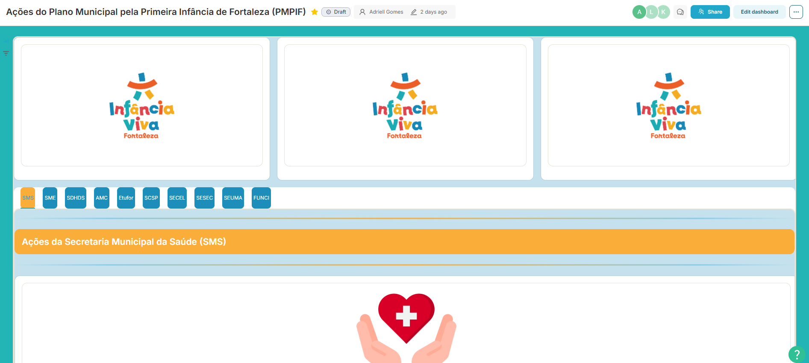

Crianças beneficiadas e cobertura (0–3 anos) – jan–jun/2025
Evolução mensal do número de crianças beneficiadas pelo auxílio financeiro e da porcentagem de cobertura em relação às crianças 0–3 anos com perfil no CadÚnico.
Leituras sintéticas de algumas ações do Plano Municipal pela Primeira Infância (PMPIF), com foco em proteção social, enfrentamento às violências e incentivo ao brincar.
Evolução mensal do número de crianças beneficiadas pelo auxílio financeiro e da porcentagem de cobertura em relação às crianças 0–3 anos com perfil no CadÚnico.
Comparação entre o total de atendimentos do programa e o recorte 0–6 anos, no primeiro semestre de 2025.
Casos atendidos pela Delegacia de Combate à Exploração de Crianças e Adolescentes (DCECA) e acompanhamentos psicossociais na Rede Aquarela.
De um lado, o recorte de violações de direitos contra crianças 0–6 anos; de outro, a resolutividade nos processos de registro civil tardio.
Percentual de gestantes com captação precoce (até a 12ª semana) e com 7 ou mais consultas de pré-natal entre os nascidos vivos do período, em comparação à meta de 80%.
Situação do matriciamento em saúde mental infantil realizado pelos CAPS infantis nas Unidades de Atenção Primária (UAPS), até junho de 2025.
À esquerda, a cobertura do Benefício de Prestação Continuada (BPC) entre crianças de 0–6 anos com deficiência; à direita, as solicitações e emissões do Bilhetinho Único da Criança no primeiro semestre de 2025.
Evolução da implantação dos microparques urbanos voltados à primeira infância e, em paralelo, o alcance do Mini Circuito de Bikes Infantil no primeiro semestre de 2025.
Os painéis interativos abaixo permitem explorar os dados do PMPIF por secretaria, território e período, complementando os recortes apresentados acima.

Acompanha metas e indicadores das ações do PMPIF nas diferentes secretarias, como nascidos vivos, captação precoce de gestantes, consultas de pré-natal, matrículas na educação infantil, proteção social e incentivos ao brincar.
Abrir dashboard
Mostra o quantitativo de alunos e visitas homologadas, escolas e instituições participantes, distribuição por turno e os principais indicadores de avaliação das experiências na Cidade da Criança.
Abrir dashboard
Acompanhe os principais impactos á cerca dos 6 infâncias vivas na praça realizados ao longo de 2025
Abrir Infográfico